Network Settings
In this section, you will be configuring additional network settings needed for deploying Tenant cluster.
After you install the Kubernetes NMState Operator, you can configure a Linux bridge network for live migration or external access to virtual machines (VMs).
|
In this POC setup, there is only one bridge, For example, two NICs are attached to SNO VMs (connected to the same bridge Ideally, there should be separate networks for Infrastructure and Tenant clusters. It is possible that in future releases or updates of this course, the separate network configurations may be included. There is a workaround to address it in this POC setup, adding the second NIC to SNO VMs after the deployment of the SNO cluster. |
Prerequisites
-
Verify that sno1 cluster is deployed successfully.
-
Access the sno1 cluster via CLI and web console.
-
Ensure that
sno1.lab.example.comnode is inReadystatus and all cluster operators are available.Sample output:[root@hypervisor ~]# oc get nodes NAME STATUS ROLES AGE VERSION sno1.lab.example.com Ready control-plane,master,worker 23h v1.29.7+4510e9c [root@hypervisor ~]# oc get clusterversion NAME VERSION AVAILABLE PROGRESSING SINCE STATUS version 4.16.8 True False 23h Cluster version is 4.16.8
-
Ensure that NMState operator is installed on sno1 cluster.
Add Additional Network Interface Card (NIC) to sno1, sno2 and sno3 VMs
To reduce the network complexity in POC setup, add the second NIC to SNO VMs at this point.
-
In
sno1VM configuration, click Add hardware.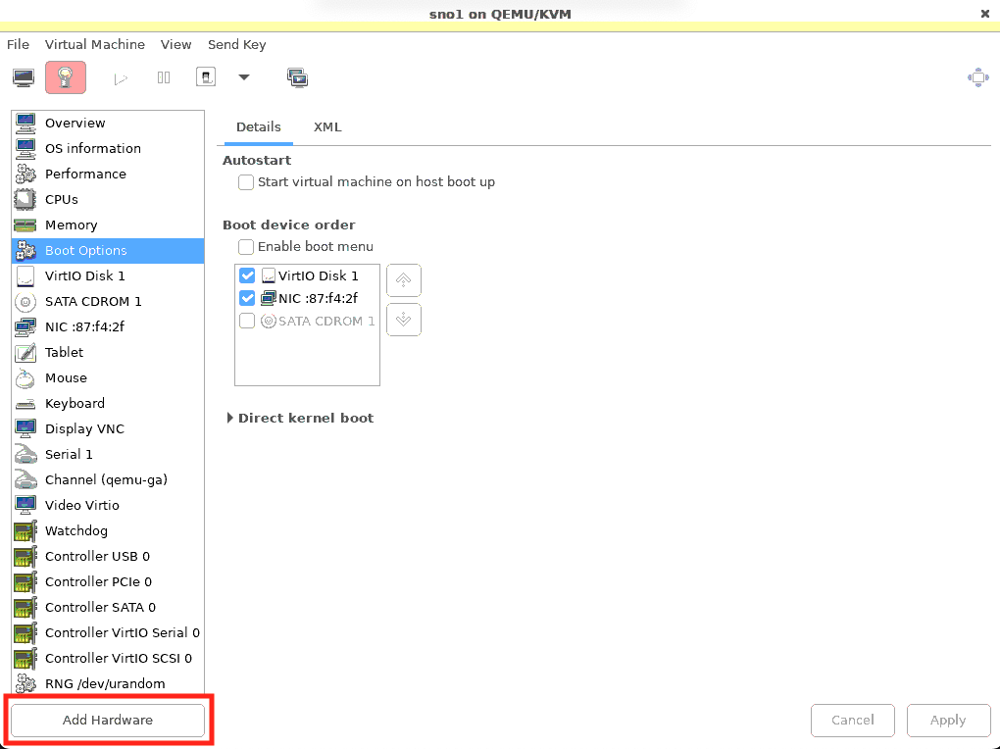 -
Add network interface.
Select .
Device name:
virbr0.Click Finish to add NIC.
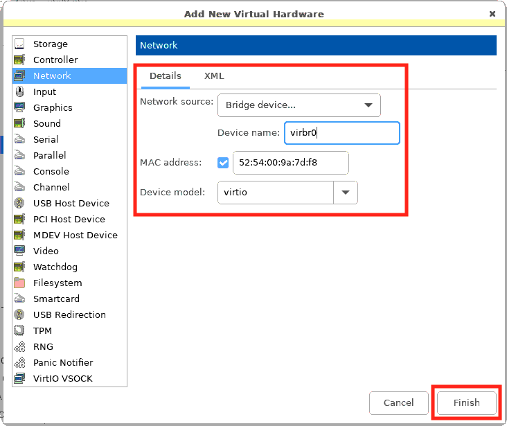 -
Notice, NIC is added on the fly.
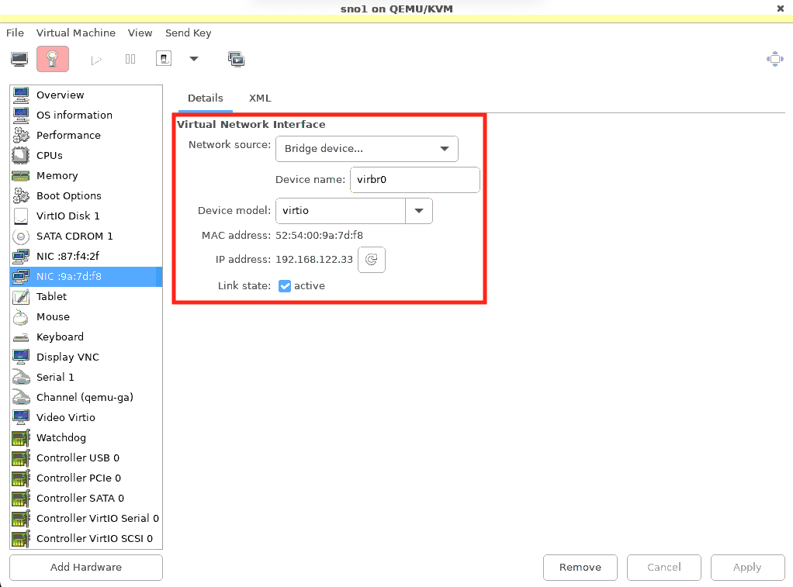
Configure NodeNetworkConfigurationPolicy
You can create a NodeNetworkConfigurationPolicy (NNCP) manifest for a Linux bridge network.
-
Access the
sno1cluster’s web console.From the left navigation pane, click .
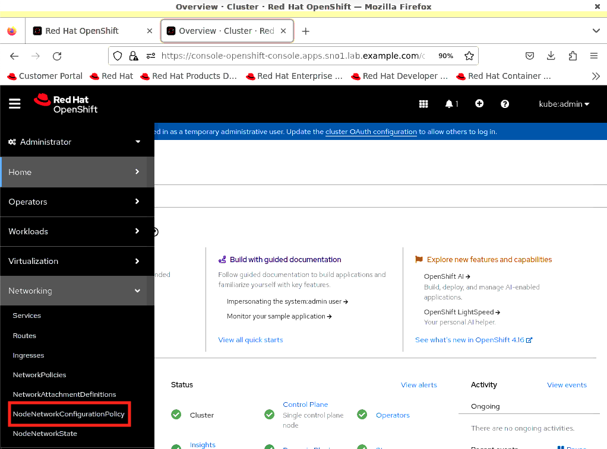 -
To create the
NodeNetworkConfigurationPolicy (NNCP), click .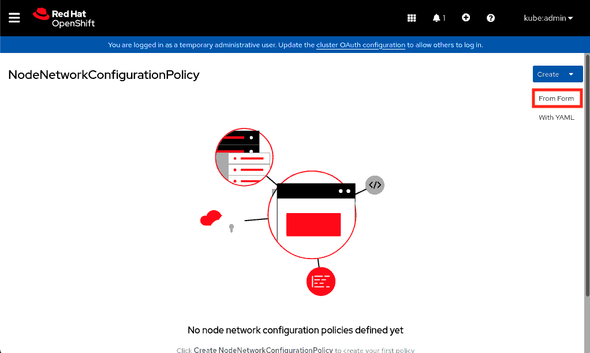 -
Create the
NodeNetworkConfigurationPolicy (NNCP).Policy name:
br0-policy.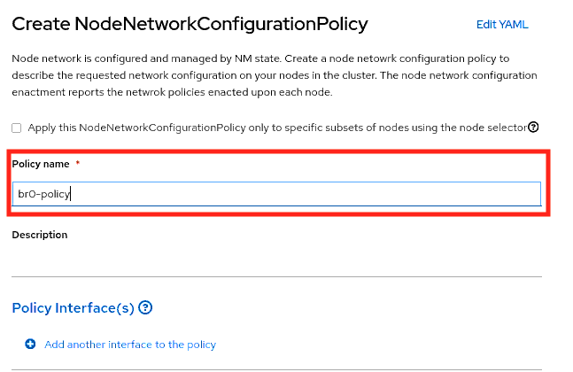Interface name:
br0.Type:
Bridge.Check box the
IPv4and selectDHCPinIP configuration.Port:
enp2s0.This is the NIC, which you added in the previous section.
The NIC
enp2s0value can be different in your environment. Check in VM’s console fromvirt-manager.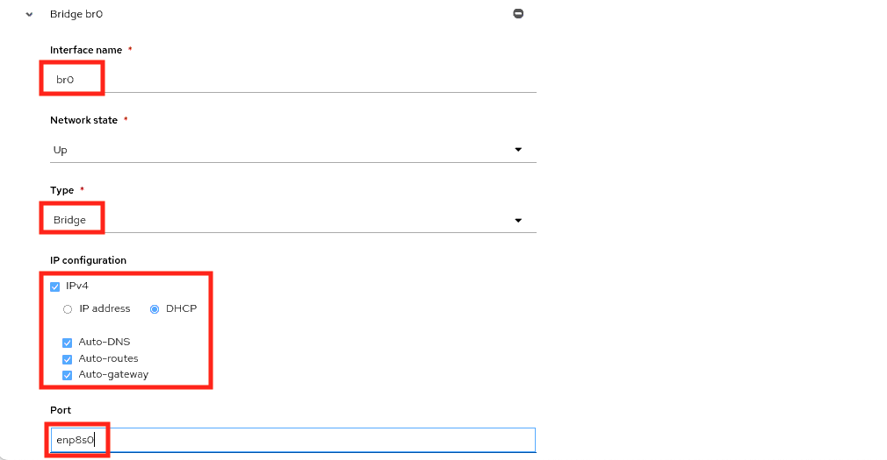Click Create to create the
NodeNetworkConfigurationPolicy (NNCP).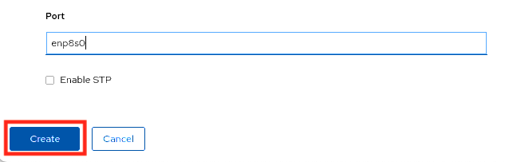 -
Verify that the
Enactment statesof thebr0-policyisAvailable.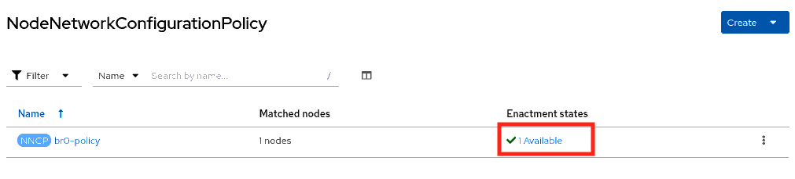
Configure NetworkAttachmentDefinitions
You can create a NetworkAttachmentDefinitions (NAD) to provide layer-2 networking to pods and virtual machines by using the OpenShift Container Platform web console.
A Linux bridge network attachment definition is the most efficient method for connecting a virtual machine to a VLAN.
-
Access the
sno1cluster’s web console.From the left navigation pane, click .
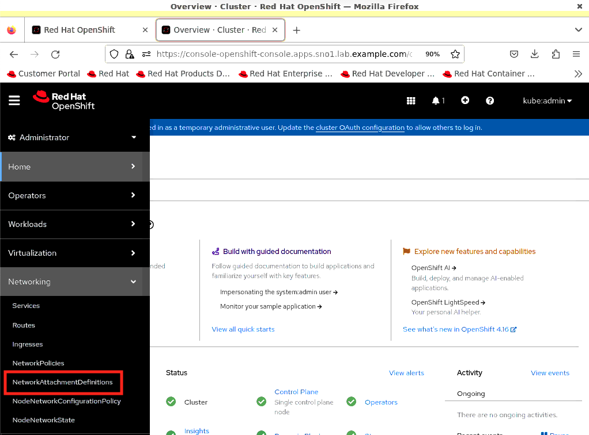 -
To create the
NetworkAttachmentDefinitions (NAD), click Create Network Attachment Definition.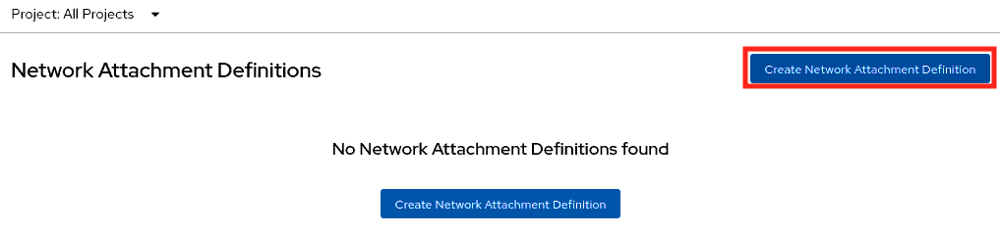 -
Create the
NetworkAttachmentDefinitions (NAD).Bridge name:
br0.Click Create to create the
NetworkAttachmentDefinitions (NAD).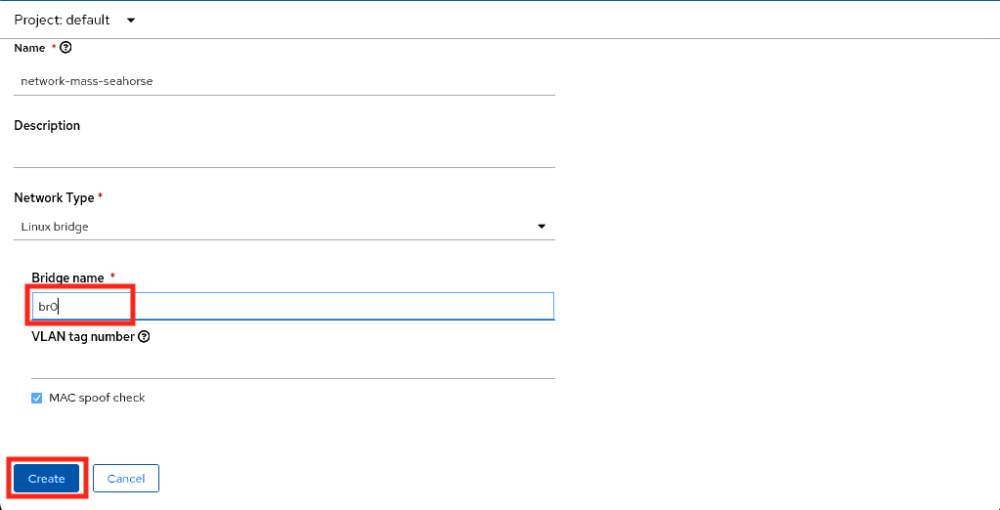 -
Verify that the
NetworkAttachmentDefinitions (NAD)is created successfully.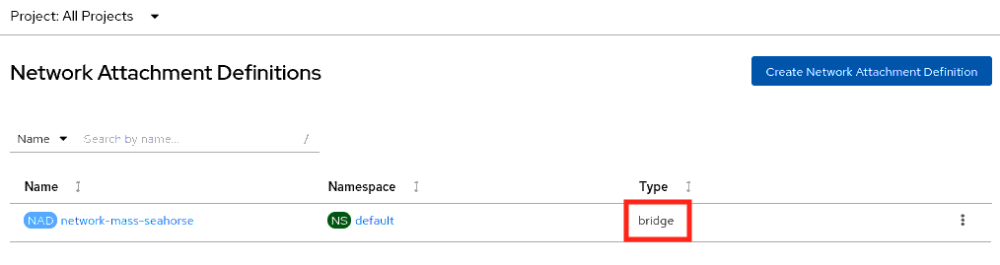